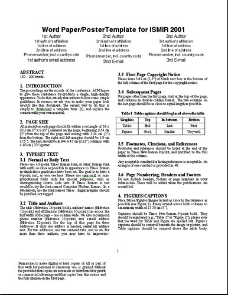
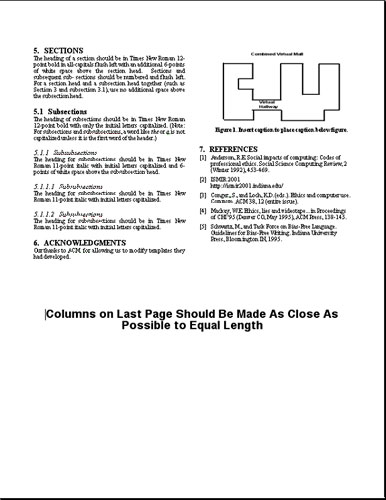

|
||||||||||||||||||
|
Download the Word Abstract Template Send your paper/poster via email to ismir01@indiana.edu See below for an example of the 2-column page layout.
Paper/Poster Template – ISMIR 2001
ABSTRACT150 – 200 words. 1. INTRODUCTIONThe proceedings are the records of the conference. ACM hopes to give these conference by-products a single, high-quality appearance. To do this, we ask that authors follow some simple guidelines. In essence, we ask you to make your paper look exactly like this document. The easiest way to do this is simply to down-load a template from [2], and replace the content with your own material. 2. PAGE SIZEAll material on each page should fit within a rectangle of 18 x 23.5 cm (7" x 9.25"), centered on the page, beginning 2.54 cm (1") from the top of the page and ending with 2.54 cm (1") from the bottom. The right and left margins should be 1.9 cm (.75"). The text should be in two 8.45 cm (3.33") columns with a .83 cm (.33") gutter. 3. TYPESET TEXT3.1 Normal or Body Text Permission to make digital or hard copies of all or part of this work for personal or classroom use is granted without fee provided that copies are not made or distributed for profit or commercial advantage and that copies bear this notice and the full citation on the first page. Please use a 9-point Times Roman font, or other Roman font with serifs, as close as possible in appearance to Times Roman in which these guidelines have been set. The goal is to have a 9-point text, as you see here. Please use sans-serif or non-proportional fonts only for special purposes, such as distinguishing source code text. If Times Roman is not available, try the font named Computer Modern Roman. On a Macintosh, use the font named Times. Right margins should be justified, not ragged. 3.2 Title and Authors The title (Helvetica 18-point bold), authors' names (Helvetica 12-point) and affiliations (Helvetica 10-point) run across the full width of the page – one column wide. We also recommend phone number (Helvetica 10-point) and e-mail address (Helvetica 12-point). See the top of this page for three addresses. If only one address is needed, center all address text. For two addresses, use two centered tabs, and so on. For more than three authors, you may have to improvise. 3.3 First Page Copyright Notice Please leave 3.81 cm (1.5") of blank text box at the bottom of the left column of the first page for the copyright notice. Permission to make digital or hard copies of all or part of this work for personal or classroom use is granted without fee provided that copies are not made or distributed for profit or commercial advantage and that copies bear this notice and the full citation on the first page3.4 Subsequent Pages For pages other than the first page, start at the top of the page, and continue in double-column format. The two columns on the last page should be as close to equal length as possible.
3.5 Footnotes, Citations, and References Footnotes and references should be listed at the end of the paper in Times New Roman 9-point, and justified to the full width of the column. Any acceptable standard for listing references is acceptable. An example of one standard is provided in #7. 3.6 Page Numbering, Headers and Footers Do not include headers, footers or page numbers in your submission. These will be added when the publications are assembled. 4. FIGURES/CAPTIONSPlace Tables/Figures/Images in text as close to the reference as possible (see Figure 1). It may extend across both columns to a maximum width of 17.78 cm (7").
Captions should be Times New Roman 9-point bold. They should be numbered (e.g., "Table 1" or "Figure 2"), please note that the word for Table and Figure are spelled out. Figure's captions should be centered beneath the image or picture, and Table captions should be centered above the table body. 5. SECTIONSThe heading of a section should be in Times New Roman 12-point bold in all-capitals flush left with an additional 6-points of white space above the section head. Sections and subsequent sub- sections should be numbered and flush left. For a section head and a subsection head together (such as Section 3 and subsection 3.1), use no additional space above the subsection head. 5.1 Subsections The heading of subsections should be in Times New Roman 12-point bold with only the initial letters capitalized. (Note: For subsections and subsubsections, a word like the or a is not capitalized unless it is the first word of the header.) 5.1.1 Subsubsections The heading for subsubsections should be in Times New Roman 11-point italic with initial letters capitalized and 6-points of white space above the subsubsection head. 5.1.1.1 Subsubsections The heading for subsubsections should be in Times New Roman 11-point italic with initial letters capitalized. 5.1.1.2 Subsubsections The heading for subsubsections should be in Times New Roman 11-point italic with initial letters capitalized. 6. ACKNOWLEDGMENTSOur thanks to ACM for allowing us to modify templates they had developed. 7. REFERENCES
  |
||||||||||||||||||